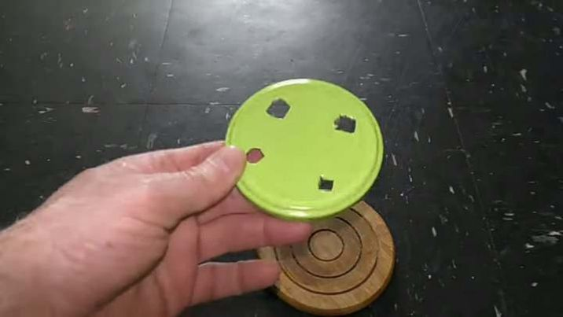
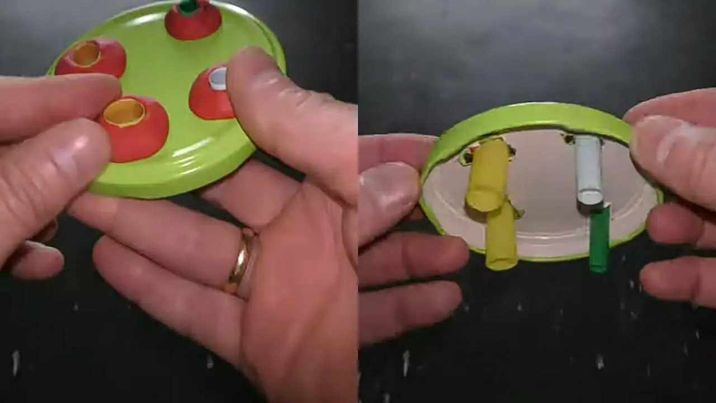
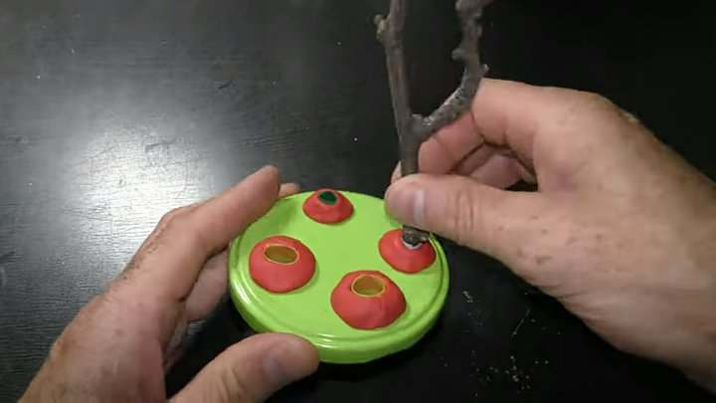
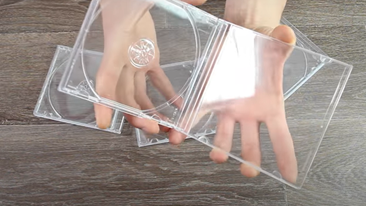
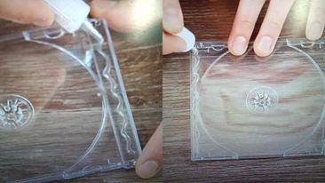
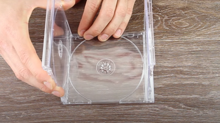
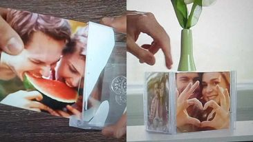

Upcycling is a creative way to give new life to items that might otherwise be thrown away. Here are some clever ways to upcycle everyday items around you:
Turn empty mason jars into charming planters by adding soil and small plants or herbs. They make great additions to your kitchen windowsill or as decorative accents around the home
STEP 1: Use a 3 liter jar with a cover in this example to make a planter for my mason jar planters

STEP 2: I use different size plastic straws. Cut a 2-3 cm long piece of straw for each hole.

STEP 3: Use a knife or whatever cutting tool you may have to cut an X for each hole in the cover. The diameter of the holes should be big enough for the stem of the plants to fit through. So, for larger plants you may need a pipe bigger than straws I prepared 4 different diameter pieces of straws all cut about 3 cm long.
STEP 4: Use plasticine to secure straws in the holes. Plasticine is waterproof and never dries. Make a ring out of plasticine.
First make a stick. Then roll the stick around the straw to make a ring. Make the ring at the end of the straw.

STEP 5:Insert the straw in the hole until the ring rests on the cover. Press the ring to the cover to seal gaps between the straw and the edge of the hole.
Fix all holes with straws in the same fashion. The cover fixed in this fashion serves as a base for the aquarium garden and it reduces water evaporation.
STEP 6: Assemble the top part of the garden. First let's add a dry branch. Trim it to a desirable size. Put the branch in one of the holes.
STEP 7: Make sure the bottom part of the branch stays above the water level. Otherwise, uncured wood will discolor water. I hang Spanish moss on the branch. It's very important to keep water level below the bottom edge of the straws.
I use a piece of plasticine and a coin to make a base for a sculpture. That's quite self-explanatory. I put the sculpture next to the branch right here in the middle of the garden. It already looks nice.

Collect wine corks and turn them into unique keychains by attaching a small eye screw and keyring. You can even paint or personalize the corks for added flair.
STEP1: First, we need to put the larger size of our washer on our wine cork. And next, put our smaller size of our washer inside of the larger size of washer.
STEP 2: Put the screw eye hook at the center of our washers then screw it until it's tight.

STEP 3: At the bottom of our wine cork, put a larger size of a washer, and put a screw eye hook at the center of the washer.

STEP 4: And push it until it's tight.

STEP 5: Put a keychain inside of the screw eye hook at the top of the wine cork.

STEP 6: You can add any decorations that you want to add on your wine cork to make it look more amazing.

Repurpose old CD cases by removing the CD holder and inserting a photo or artwork. Hang them on the wall or display them on a shelf for a modern and minimalist look.
STEP 1: We need 4 pieces of clear CD case.
STEP 2: Put a glue on each side of the CD case.
STEP 3: Put another 2 CD cases on each side on top of the glue.
STEP 4: Put a glue on top of each side of the two CD cases

STEP 5: Put another clear CD case on top of each side of the two CD cases and let it dry for few minutes.

STEP 6: After you let it dry, then you're ready to put a picture on your D.I.Y CD case picture! You can put pictures on each side as you want.
